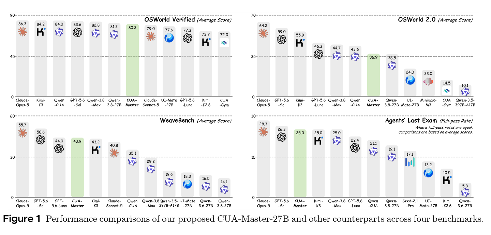
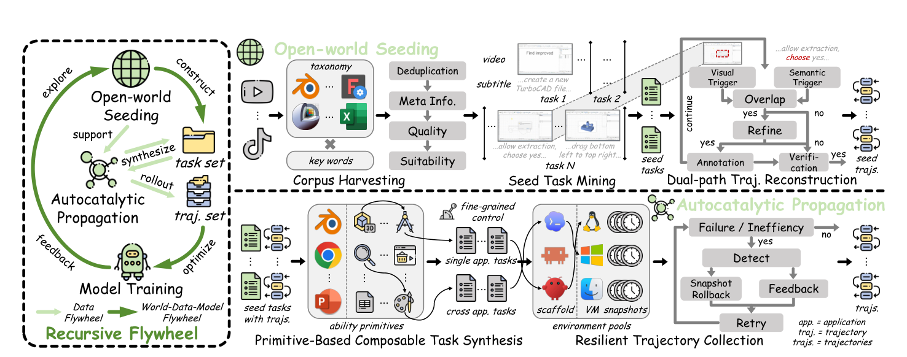
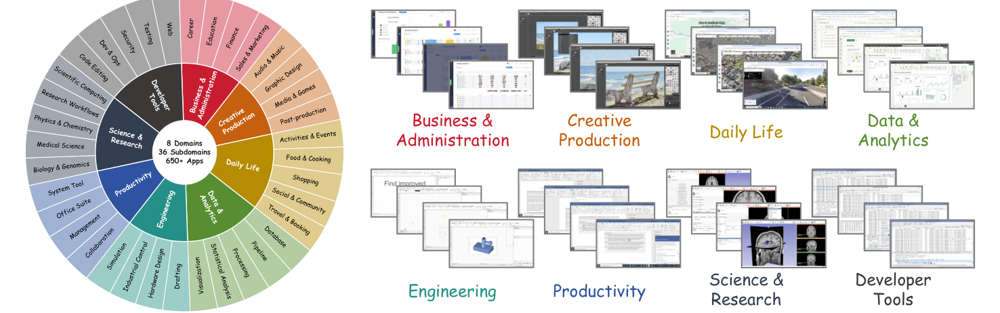
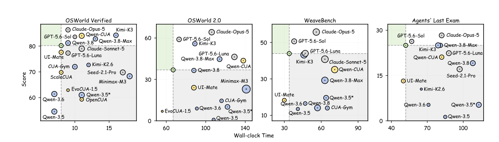

A nested double-loop recursive framework that keeps expanding what computer-use agents can do.
MMLab, CUHK · THU · HKUST(GZ) · Explore Academy, JD
CUA-Master-27B achieves competitive performance across GUI-only and GUI–CLI hybrid benchmarks, consistently outperforming similarly sized specialists and approaching markedly larger or closed-source models, while also executing tasks with fewer steps, fewer tokens, and less wall-clock time.

Development of computer-use agents (CUAs) remains constrained by the limited diversity, controllability, and reliability of interaction data. Conventional pipelines lack iterative feedback, while existing recursive approaches rely on self-generated experiences, limiting ability expansion and yielding diminishing returns. We introduce CUA-Master, a nested double-loop recursive improvement framework. At the system level, an outer world–data–model flywheel continuously incorporates open-world corpus and leverages evolving model weaknesses to guide subsequent data construction and optimization iterations. At the data level, an inner flywheel couples open-world seeding and autocatalytic propagation: the former mines authentic workflows as seed tasks from instructional videos with visual-semantic dual-path trajectory reconstruction; the latter transforms these seeds into reusable primitives for controllable synthesis of diverse, complex, and verifiable tasks. A feedback-guided snapshot-rollback retry mechanism further enables efficient and reliable trajectory collection in real environments.

Mines authentic workflows from instructional videos (YouTube, TikTok, Bilibili) via hierarchical corpus harvesting and seed task mining, then reconstructs trajectories with a visual-semantic dual-path mechanism — continuously injecting external knowledge beyond the model’s own capabilities.
Abstracts seed tasks into reusable ability primitives and composes them into verifiable synthetic tasks, with explicit control over task complexity and application scope — from single-app to cross-app workflows.
Feedback-guided retries roll the environment back to the latest valid snapshot instead of restarting from scratch, preserving valid execution prefixes and substantially improving rollout success rate and efficiency.

Under a consistent benchmark protocol, CUA-Master-27B improves over UI-Mate-27B by +2.6 / +12.9 / +25.6 / +11.8 across the four benchmarks, and matches or surpasses Qwen-CUA-397B-A17B on hybrid settings despite being over an order of magnitude smaller. It also completes tasks with fewer steps and 24–36% less runtime than comparable models.
| Method | OSWorld Verified † | OSWorld 2.0 † | WeaveBench ‡ | Agents’ Last Exam ‡ |
|---|---|---|---|---|
| Generalist | ||||
| Qwen-3.5-27B | 54.6 | 0.8 | 13.5 | 1.3 |
| Qwen-3.5-397B-A17B | 61.0 | 10.1 | 19.6 | 5.3 |
| Qwen-3.6-27B | 61.4 | 8.9 | 16.5 | 5.3 |
| Qwen-3.8-27B | 81.2 | 36.5 | 14.1 | 19.1 |
| Qwen-3.8-Max | 82.8 | 44.7 | 29.2 | 25.0 |
| Minimax-M3-428B-A23B | 68.3 | 23.0 | – | – |
| Kimi-K2.6-1T-A32B | 72.7 | – | – | 10.5 |
| Kimi-K3-2.8T-A104B | 84.2 | 55.9 | 43.2 | 25.0 |
| Seed-2.1-Pro * | 69.8 | – | – | 17.1 |
| GPT-5.6-Luna * | 77.3 | 46.3 | 44.0 | 22.4 |
| GPT-5.6-Sol * | 83.6 | 59.0 | 50.6 | 26.3 |
| Claude-Sonnet-5 * | 79.0 | – | 40.8 | – |
| Claude-Opus-5 * | 86.3 | 64.2 | 55.7 | 28.3 |
| Specialist | ||||
| OpenCUA-72B | 59.3 | – | – | – |
| GUI-Owl-1.5-32B | 58.1 | – | – | – |
| EvoCUA-1.5-32B | 62.9 | 6.9 | – | – |
| ScaleCUA-9B | 69.8 | – | – | – |
| Qwen-CUA-397B-A17B | 84.0 | 43.6 | 35.1 | 21.1 |
| UI-Mate-27B | 77.6 | 24.0 | 18.3 | 13.2 |
| CUA-Master-27B (Ours) | 80.2 | 36.9 | 43.9 | 25.0 |
Average scores (Agents’ Last Exam: full-pass rate). * closed-source models; † GUI-only evaluation; ‡ GUI+CLI hybrid assessment. Full table with per-task step / token / time metrics in the paper.

Without platform-specific tuning, CUA-Master-27B scores 56.2 on WindowsAgentArena, 43.0 on MacOSWorld, and 59.9 on MacAgentBench — generalizing across Linux, Windows, and macOS.
The world–data–model flywheel exhibits continuous gains across recursive iterations, with SFT iterations progressively expanding abilities and a final RL stage breaking through the capability plateau.
The double-loop design substantially improves the diversity, coverage, reliability, and controllability of synthesized tasks and trajectories compared to unidirectional or closed-world pipelines.
@article{yu2026cuamaster, title = {CUA-Master: Scaling Computer-use Agents through Open-World Recursive Improvements}, author = {Yu, Xinlei and Li, Gen and Zhao, Ji and Chen, Zhangquan and Wang, Congcong and Dong, Shuai and Peng, Zelin and Xu, Yuqi and Wu, Hongrui and Tuo, Kaiwen and Yang, Cheng and Feng, Kaituo and Wu, Yifan and Zhang, Jiayi and Wu, Dongming and Shao, Wenqi and Wang, Jiaqi and Yue, Xiangyu}, journal = {arXiv preprint arXiv:2611.03126}, year = {2026} }